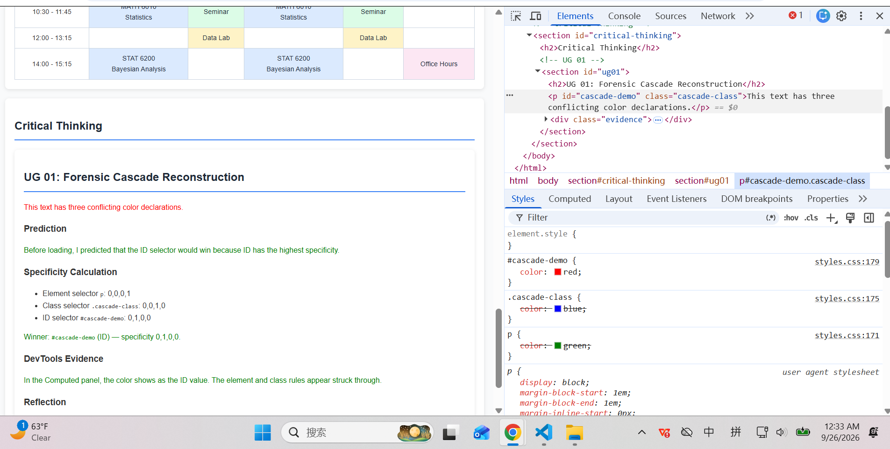
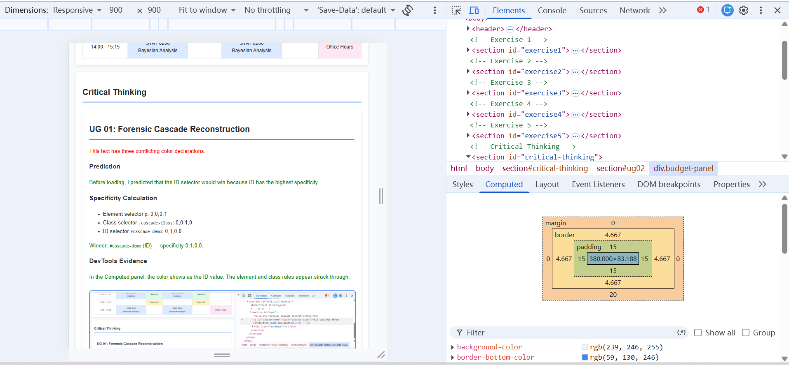
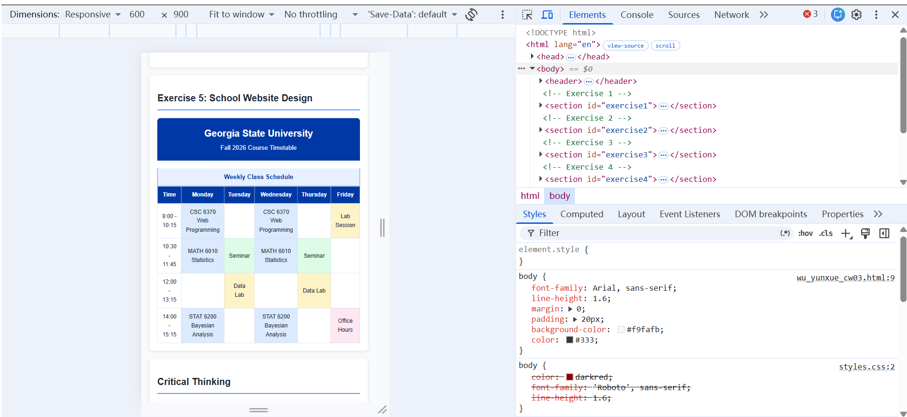
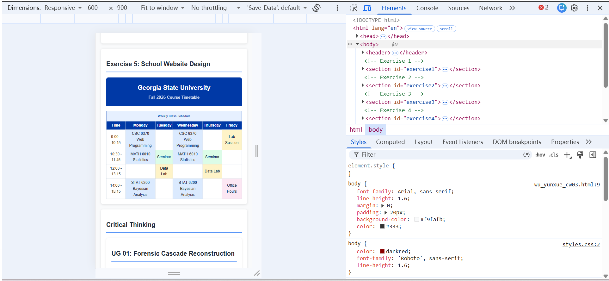
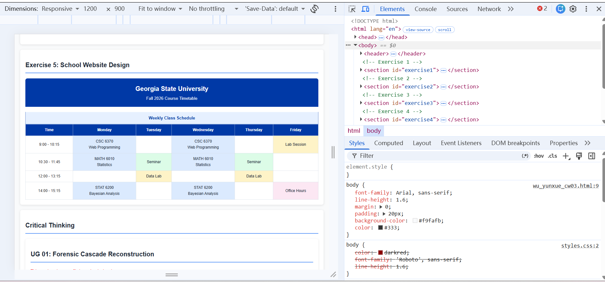
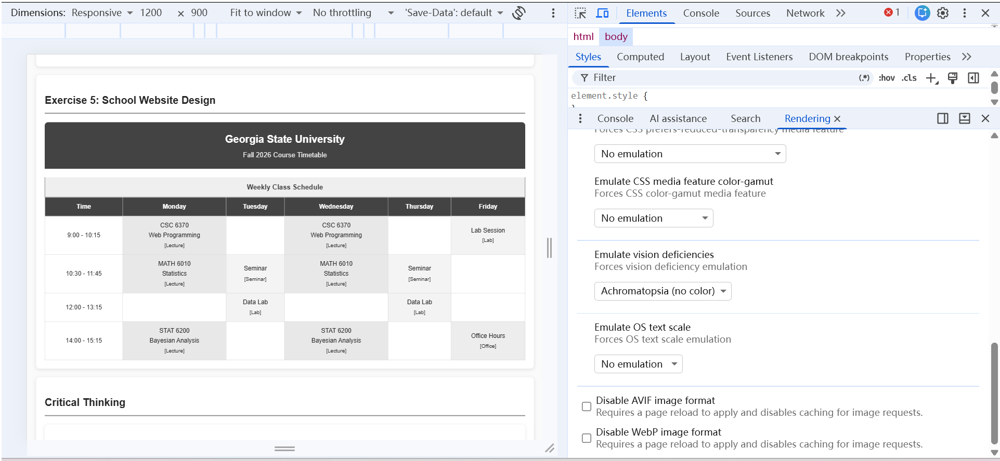
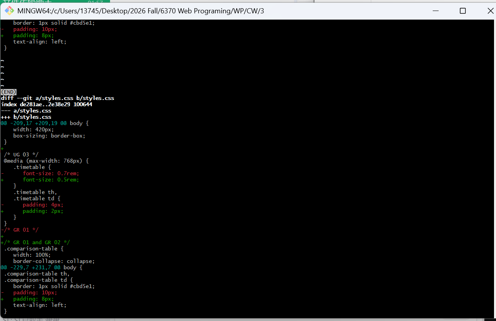

Yunxue Wu | CSC 4370/6370 - Web Programming | 09/27/2026
This paragraph demonstrates the dark red text color applied via external CSS.
Mistake 1: background: ivory;
Correction: background-color: ivory;
Explanation: background is a shorthand property. Using background-color is clearer and avoids resetting other background properties.
Mistake 2: margin: 20px 0px 20px 0px;
Correction: margin: 20px 0;
Explanation: The shorthand can be reduced. Top/bottom = 20px, left/right = 0.
Mistake 3: .container { width: 100%; padding: 20px; }
Correction: .container { width: 100%; padding: 20px; box-sizing: border-box; }
Explanation: Without box-sizing: border-box;, the padding is added to the width, causing the container to overflow its parent.
/* Corrected CSS */
body {
font-family: "Times New Roman";
margin-left: 20%;
margin-right: 20%;
text-align: justify;
background-color: ivory;
color: red;
}
h1, h2, h3 {
color: #ff0000;
font-size: 2.5em;
margin: 20px 0;
}
.container {
width: 100%;
padding: 20px;
box-sizing: border-box;
}
a {
color: #0000FF;
text-decoration: underline;
}
The Weeknd
Blinding Lights
After Hours
2020
I been tryna call, I been on my own for long enough
Maybe you can show me how to love, maybe
I'm going through a crisis, I thought I'd see the light
But there's nothing but blinding lights
I'm looking for something that I can't see
Maybe you can show it to me, maybe
I'm going through a crisis, I thought I'd see the light
But there's nothing but blinding lights
This exercise uses a separate external stylesheet called lyrics.css to style the song lyrics page.
The stylesheet is linked in the HTML document's <head> section:
<link rel="stylesheet" href="lyrics.css">See lyrics.html for the full example.
Fall 2026 Course Timetable
| Time | Monday | Tuesday | Wednesday | Thursday | Friday |
|---|---|---|---|---|---|
| 9:00 - 10:15 | CSC 6370 Web Programming [Lecture] |
CSC 6370 Web Programming [Lecture] |
Lab Session [Lab] |
||
| 10:30 - 11:45 | MATH 6010 Statistics [Lecture] |
Seminar [Seminar] |
MATH 6010 Statistics [Lecture] |
Seminar [Seminar] |
|
| 12:00 - 13:15 | Data Lab [Lab] |
Data Lab [Lab] |
|||
| 14:00 - 15:15 | STAT 6200 Bayesian Analysis [Lecture] |
STAT 6200 Bayesian Analysis [Lecture] |
Office Hours [Office] |
This text has three conflicting color declarations.
Before loading, I predicted that the ID selector would win because ID has the highest specificity.
p: 0,0,0,1.cascade-class: 0,0,1,0#cascade-demo: 0,1,0,0Winner: #cascade-demo (ID) — specificity 0,1,0,0.
In the Computed panel, the color shows as the ID value. The element and class rules appear struck through.

Figure UG01: DevTools shows #cascade-demo's red color wins; .cascade-class and p are overridden.
The browser follows the cascade: higher specificity wins when declarations conflict. This is why IDs override classes and elements, and why they should be used sparingly.
This panel's outer width is exactly 420px at a 900px viewport, without using width: 420px.
Content width: 380px | Padding: 15px each side | Border: 5px each side | Margin: 0
Total = 380 + 15 + 15 + 5 + 5 = 420px
.budget-panel {
width: 380px;
padding: 15px;
border: 5px solid #3b82f6;
}.budget-panel {
width: 420px;
padding: 15px;
border: 5px solid #3b82f6;
box-sizing: border-box;
}
Figure UG02: DevTools box model at 900px viewport. Content 380px + padding 30px + border 10px = 420px outer width. The border shows 4.667px due to browser sub-pixel rendering.
With border-box, the padding and border are included in the width. To keep 420px outer width, I set width to 420px directly. This is simpler and more predictable.
Failure definition: At 600px, the timetable text wraps to 3+ lines per cell, making the schedule hard to read.
First failure width: 600px. The six-column timetable forces each cell to wrap heavily.
At 600px, the timetable has 6 columns. Each column is about 600 / 6 = 100px minus padding. The text "Web Programming" wraps to multiple lines.
@media (max-width: 768px) {
.timetable {
font-size: 0.5rem;
}
.timetable th,
.timetable td {
padding: 2px;
}
}
Figure UG03a: Before the fix at 600px, columns are too narrow and text wraps badly.

Figure UG03b: After the fix at 600px, smaller font and padding make the table readable.

Figure UG03c: At desktop width (1200px), the layout is unchanged.
The failure happens when the table's natural minimum width exceeds the viewport. The media query reduces font size and padding only on small screens, so the desktop layout above 1000px stays the same.
Audited part: The Exercise 5 timetable uses color to distinguish lecture, lab, seminar, and office hours.
Problem: If the colors are removed (grayscale or color-blind), the activity type is no longer distinguishable.
Foreground: #1f2937 | Background: #dbeafe
Contrast ratio: 12.03:1 (passes WCAG AA and AAA)
Foreground: #1f2937 | Background: #fef3c7
Contrast ratio: 13.18:1 (passes WCAG AA and AAA)
I added a text label (e.g., "Lecture", "Lab", "Seminar") inside each cell, so the activity type is readable without color.

Figure UG04: Grayscale screenshot. The text labels still convey the activity type without color.
YZ looked at the grayscale version and correctly identified the activity types from the labels.
Color alone is not accessible. Adding a text label as a non-color cue ensures the information is available to all users, including those with color vision deficiency or in grayscale printing.
Task: Implement the Exercise 5 timetable using two CSS architectures: utility-oriented and component-oriented.
Uses small, single-purpose classes like .bg-blue, .text-white, .p-10.
<td class="bg-lecture text-dark p-10">CSC 6370</td>Selector count: 12 utility classes
Uses semantic classes like .timetable__cell--lecture.
<td class="timetable__cell timetable__cell--lecture">CSC 6370</td>Selector count: 4 component selectors
| Criterion | Utility | Component |
|---|---|---|
| Maintainability | Low (changes spread across HTML) | High (changes stay in CSS) |
| Reusability | High (classes work anywhere) | Medium (tied to component name) |
| File size | More HTML, less CSS | Less HTML, more CSS |
I chose the component-oriented architecture because it keeps the styling logic in one place, making the timetable easier to maintain when colors or spacing change.
Component classes are less reusable outside the timetable context. If I want to use the same color elsewhere, I must create a new class or duplicate the rule.

Figure GR01: Git diff showing the utility version replaced by the component version.
Both architectures work, but the component-oriented approach fits this project better because the timetable is a self-contained component. The tradeoff is slightly less flexibility outside the component.